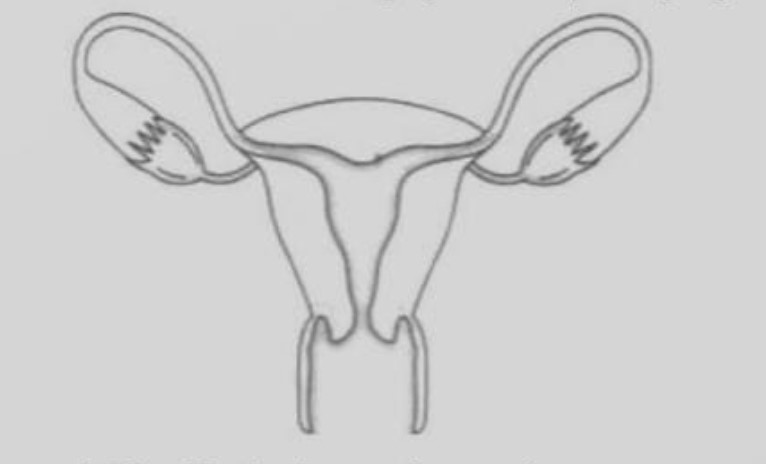
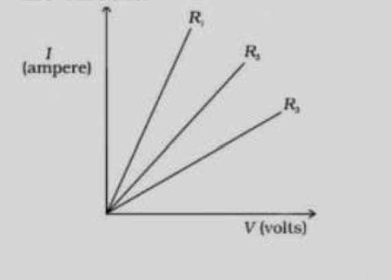
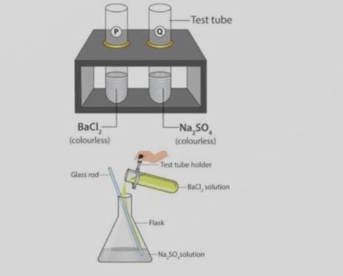

i. Good thermal conductivity
ii. Good electrical conductivity
iii. Ductility
iv. High melting point
a) (i) and (ii)
b) (i) and (iii)
c) (ii) and (iii)
d) (i) and (iv)
3Fe(s) + 4H2O(g) --> Fe3O4(s) + 4H2
i. Iron metal is getting oxidized
ii. Water is getting reduced
iii. Wateris acting as a reducing agent
iv. Water is acting as a oxidizing agent
a) (ii) and (iv)
b) (iii) and (iv)
c) (i),(ii) and (iii)
d) (i),(ii)and (iv)
b) Proteins
c) RNA
d) DNA
b) Luminous flame
c) Sooty flame
d) Smoky flame
b) Dissimilar
c) Similar
d) Abnormal
a) glycerine
b) kerosene
c) water
d) mustard oil
image on screen as shown. The diagram, correctly showing the image of the tree on the screen,
is diagram:
a) A and the device X is a concave
b) A and the device X is a convex mirro
c) B and the device X is a convex lens
d) B and the device X is a concave mirror
A. All glands are ductless
B. The pancreas is a mixed gland
C. Gland are specific in their action
D. Endocrine glands are ductless
a) B & D
b) All of these
c) B & C
d) A & C
a) minerals
b) protiens
c) carbohydrates
d) fats
a) mosquite
b) virus
c) parasite
d) bacteria
a) remian blue
b) change to colourless
c) change to pink
d) change to green
Statement B: Electrical activity of the brain is reconciled through an instrument called a stethoscope
a) neither statement A nor statement B is true
b) both the statement A and B are true
c) statement A is true, B is false
d) statement B is true, A is false
a) rose
b) amoeba
c) hydra
d) penicillin
There
a) are good conductor of electricity
b) are poor conductor of electricity
c) have strong forces of attraction between their molecules
d) do not have strong forces of attraction between their molecules
a) (ii) & (iii)
b) all of these
c) (ii) & (iv)
d) (i),(ii)&(iv)
a) Chlorine
b) Copper
c) Lead
d) All of these
Reason (R): Three-pin connections reduce the heating of connecting wires
a) Both A & R are true and R is the correct explanation of A.
b) Both A & R are true but R is not the correct explanation of A
c) A is true but R is false
d) A is false but R is true
Reason (R): HCL gas dissolves in the water present in wet litmus paper to form H+ ions.
a) Both A & R are true and R is the correct explanation of A.
b) Both A & R are true but R is not the correct explanation of A
c) A is true but R is false
d) A is false but R is true
Reason (R): Excretory substance removes nitrogenous waste from the body
a) Both A & R are true and R is the correct explanation of A.
b) Both A & R are true but R is not the correct explanation of A
c) A is true but R is false
d) A is false but R is true
Reason (R): Platinum, gold and silver are least reactive metals.
a) Both A & R are true and R is the correct explanation of A.
b) Both A & R are true but R is not the correct explanation of A
c) A is true but R is false
d) A is false but R is true
ii. Can the organisms of any trophic level be removed without causing any damage to the ecosystem.
a. Ethanoic acid
b. H2S
c. Propanone
d. F2
placed in front of it." Justify this statement stating the position of object with reaspect to the mirror in each case for obtaining these images.
ii. The far point of myopic person is 100cm in front of the eye. calculate the focal length and power of a lens required to enable him to see distant objects clearly.
i. Slice 1 in a dry and dark place
i. Slice 2 in moist and dark place
i. Slice 3 in moist and refrigerator
What would he observe in each of the above conditions? Give reason for your answer.
Answer the following by carefully studying the figure:

i. Identify yhe images shown above.
ii. Label in the figure the ovary, oviduct, uterus, vargina.
iii. State the functions of the labeled parts in part b
When CO2 gas pass through saturated solution of ammonical brine, two compound 'X' and 'Y' are formed. 'Y' is used as antacid and decomposes to form another solid 'Z'. Identify 'X', 'Y', 'Z' and write the chemical equations.
ii. Name the hormone.
a. Which brings change in male humans during the begining of adolescence
b. Whcih coordinates the level of sugar in blood.
The resistance of a circuit is defined as the ratio between the voltage applied to the current flowing through it. Rearranging the above relation,
R=V/I
Electric charge flow easily through some materials than others. The electrical resistance measures how much the flow of this electric charge is restricted within the circuit.

(i) What is the units of electrical resistance?
(ii) Define Ohm's law.
(iii) From graph which resistance have high resistance?
(i) When dil. sulphuric acid is added to pieces of iron sulphide, hydrogen sulphide gas is produced and souble ferrous sulphate is formed. Which chemical reaction is involved in this process?
(ii) Mention reaction which is used for the preparation of oxygen gas in the laboratory.
(iii) What are the products formed in the double displacement reaction discussed below?

Which elements displace aluminum from its salt?
(i) In XX-XO type of sex determination who produces two different types of gametes?
(ii) A couple has six daughters. What is the possibility of their having a girl next time?
What is the number of autosomes present in the liver cells of a human female?